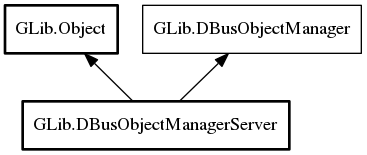

DBusObjectManagerServer
Object Hierarchy:
Description:
DBusObjectManagerServer is used to export DBusObject instances using the standardized org.freedesktop.DBus.ObjectManager interface.
For example, remote D-Bus clients can get all objects and properties in a single call. Additionally, any change in the object hierarchy is broadcast using signals. This means that D-Bus clients can keep caches up to date by only listening to D-Bus signals.
See DBusObjectManagerClient for the client-side code that is intended to be used with DBusObjectManagerServer or any D-Bus object implementing the org.freedesktop.DBus.ObjectManager interface.
Namespace: GLib
Package: gio-2.0
Content:
Properties:
Creation methods:
Methods:
Inherited Members:
All known members inherited from class GLib.Object

All known members inherited from interface GLib.DBusObjectManager